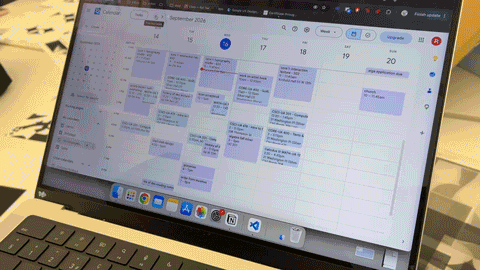
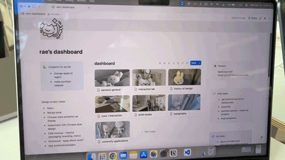
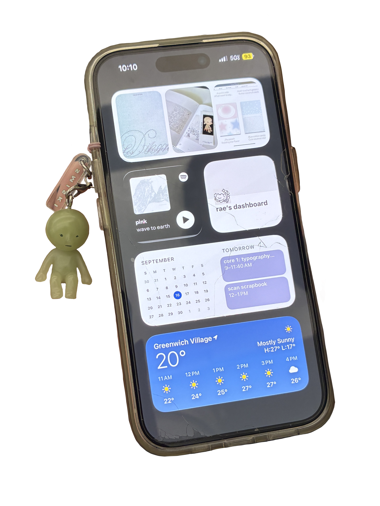

i use google calendar (for my schedule and any events) as well as notion (for my tasks, school notes, design projects, budget tracker, basically everything).

yes! very pastel teals, blues, and purples.
i tried to use those physical yearly planners (for like 5 years in a row) but i would only use it for 2 months and then stop.
eventually, i started using google calendar because of my high school, and i liked it as it kept everything in one place.

i use both of them to note down tasks, homework, projects, and class schedules.
if i really need to, i would also use it to remind myself or allocate specific times of the day for errands such as groceries.
i usually plan my week out almost 4 to 5 days into the future so i can keep my week organized and it helps me not to feel anxious to know that everything has been planned out. i can also keep track of my time.
also, on notion, my budget tracker is my baby.

i have widgets of my planning and schedule apps on my phone.
it's on my homescreen so it's easily accessible for me - i can just look at it and now what's happening in the day. both notion and google calendar are on there for me to see.